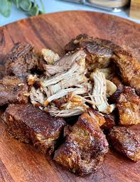

Odin Recipes

Carnitas
What is better: a slow cooked pork shoulder? -or- a crispy pan fried pork shoulder?
Why not do both. With this friendly homemade Carnitas recipe you will be able to enjoy the super tender and juicy pork shoulder and a crisp bite at the same time.
Ingredients
- Pork shoulder/butt
- Salt
- Black pepper
- Onion
- Jalapeno
- Garlic
- Juice from orange
Rub
- Dried oregano
- Ground cumin
- Olive oil
Steps
-
Rinse and dry pork then apply the salt and pepper
-
Combine ingredients for run then apply to pork
- Place pork and all ingredients in slow cooker
- Cook for 10 hours on low or 7 hours on high
- Pork is done when it can be shred with a fork
- Remove pork from slow cooker and allow to rest
- Reduce the remaining liquid to 2 cups
- Shred pord with 2 forks or bear claws
Lets add some crisp
- Add olive oil to a wok
-
Allow oil to slightly smoke before adding pork; Do it in batches to prevent the pan from cooling too quickly
- Cook to desired crispyness and flip
-
Remove from pan; finishes other batches if needed
-
Serve with side(s) of choice and remaining liquid